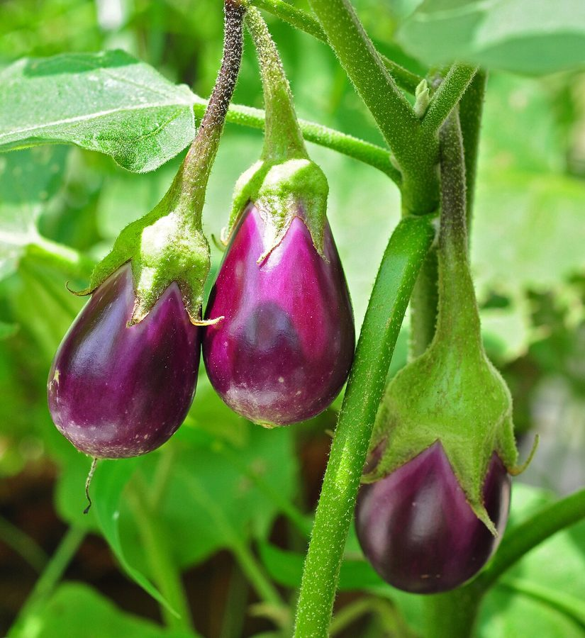

बैंगनBrinjal
Solanum melongena · Solanaceae · FLR-0093

- Scientific name
- Solanum melongena L.
- Family
- Solanaceae
- Hindi
- बैंगन
- Status here
- cultivated
- IUCN
- not evaluated
When to look कब देखें
Present all year.
बैंगन / Brinjal / Eggplant
Solanum melongena L. — Solanaceae
बैंगन (भंटा / एगप्लांट / औबरजीन) — पूर्वी उत्तर प्रदेश के खेतों और घरेलू बाड़ियों (bari) में बड़े पैमाने पर उगाई जाने वाली एक अत्यंत महत्वपूर्ण, बहुवर्षीय शाकीय उप-झाड़ी (woody herb or sub-shrub) है। यह भारत की सबसे पुरानी खेती वाली सब्जियों में से एक है, जिसकी उत्पत्ति और घरेलूकरण (domesticated) भारतीय उपमहाद्वीप में ही हुआ था। इसकी सबसे बड़ी पहचान इसकी रोएँदार, चौड़ी पत्तियाँ (जिन पर कभी-कभी छोटे कांटे होते हैं), तारे जैसे बैंगनी रंग के फूल (purple flowers with yellow stamens), और विभिन्न आकारों (गोल, अंडाकार या लंबे बेलनाकार) व रंगों (चमकदार बैंगनी, हरे या सफेद) के फल हैं। पूर्वी उत्तर प्रदेश में आलू के बाद बैंगन सबसे लोकप्रिय दैनिक सब्जी है, और आग पर भूनकर बनाया जाने वाला 'बैंगन का भर्ता' या 'चोखा' (baingan ka chokha) यहाँ का एक मुख्य पारंपरिक व्यंजन है।
Quick Identification त्वरित पहचान
| Feature | Description |
|---|---|
| Plant habit | Erect, heavily branched, woody annual or short-lived perennial sub-shrub up to 60–120 cm high |
| Leaves | Alternately arranged, large (10–20 cm), lobed, covered in fine greyish-velvety hairs, sometimes with sharp spines along the veins |
| Flowers | Purple or violet, 5-lobed, star-shaped, with a prominent central cluster of bright yellow stamens |
| Fruit | A large, fleshy, glossy berry; shapes range from small round egg-like, large globose, to long cylindrical; colors include dark purple, green, and white-striped |
| Stem | Stout, branching, covered in star-like hairs, often bearing small sharp spines in wilder varieties |
Field tip: Walk inside a local vegetable garden. Look for medium-sized bushy plants with velvety, lobed leaves. Look for star-shaped purple flowers with yellow centers. The large, glossy purple or green fruits hang from the branches.
Morphology आकारिकी
Biometrics (typical measurements of mature plants in the northern Indian plains):
| Measurement | Range |
|---|---|
| Plant height | 60–120 cm |
| Leaf length | 10–20 cm |
| Leaf width | 8–15 cm |
| Flower diameter | 2.0–3.0 cm |
| Fruit length | 10–30 cm |
| Fruit weight | 100–500 g |
| Seed size | 2–3 mm |
Stem and Branches: Stems are stout, round, woody at the base in older plants, covered in dense, star-shaped hairs.
Foliage: Simple, alternate leaves. Leaf blades are thick, velvety, with wavy or lobed margins, sometimes bearing spines on the midrib.
Flowers: Solitary or clustered in small axillary cymes. The green calyx is often spiny, expanding slightly at the base of the developing fruit.
Fruit and Seeds: A large berry with spongy flesh containing numerous small, flat, light brown seeds.
Cultivation Calendar कृषि कैलेंडर
- Kharif crop: Nursery sowing is done in June–July; seedlings are transplanted in July–August. Harvesting begins in October and continues through winter.
- Rabi/Summer crop: Nursery sowing is done in October–November; seedlings are transplanted in November–December. Harvesting occurs from February to May.
- Transplantation: Seedlings are transplanted at 3–4 leaf stage, spaced 60 cm apart. The crop requires regular watering and nitrogen-rich manure.
Associated Species / Interactions संबंधित प्रजातियाँ
- Pollinators: Visited heavily by large bumblebees and carpenter bees (Xylocopa species), which perform "buzz pollination" (vibrating the flower to release pollen from the tubular anthers).
- Herbivores: The spiny leaves of traditional varieties protect the plant from grazing goats.
Pests and Diseases कीट और रोग
- Brinjal Shoot and Fruit Borer: Leucinodes orbonalis is the most destructive pest. The pinkish caterpillars bore into the growing shoots, causing them to wilt and droop, and later bore into the fruits, making them unfit for consumption.
- Southern Green Stink Bug: Nezara viridula (Southern Green Stink Bug, INS-0042) sucks sap from young fruits, causing them to develop yellow, dry patches.
- Little Leaf Disease: Transmitted by leafhoppers, causing leaves to become tiny and stunted, preventing fruit formation.
Traditional and Ethnobotanical Use पारंपरिक और नृवंशवनस्पति उपयोग
- Baingan Chokha Preparation: The large round purple brinjal (bhanta) is slit, stuffed with garlic cloves, roasted whole over dry cow-dung embers (kanda), peeled, and mashed with mustard oil, boiled potatoes, tomatoes, and green chillies to make Chokha, served with Litti.
- Ayurvedic Cough Remedy: The seeds are roasted and smoked in traditional practices to relieve toothache, or a warm decoction of the root is used to treat chronic coughs.
- Appetizer Chutney: The green long brinjal is boiled and mashed with tamarind pulp and salt, consumed as a sour appetizer to improve digestion.
- Alkaline Ash Treatment: Dry stems and roots are burned to make alkaline ash (kshara), used in traditional remedies to treat bloating and spleen disorders.
Expected Locally स्थानीय रूप से अपेक्षित
Not a field record. Written from published accounts for eastern Uttar Pradesh. No confirmed local sighting yet — if you have seen it, that is what the atlas needs.
अभी तक स्थानीय पुष्टि नहीं। यह विवरण प्रकाशित स्रोतों से है, किसी अवलोकन से नहीं।
A staple crop grown in every household backyard vegetable garden (bari) and commercial farm across the Basti district, regularly observed in the Harraiya, Vikramjot, and Basti blocks. Farmers state that traditional spiny varieties (kaante-dar baingan) are more resistant to pests than smooth hybrid ones. The harvesting of bhanta in winter coincides with the picnic season, where Litti-Chokha is cooked outdoors.
Distribution वितरण
Global range: Native to the Indian subcontinent; now cultivated globally as a major warm-temperate and tropical vegetable crop.
In India: Cultivated universally in all states and plains.
In Uttar Pradesh: Abundant state-wide in all agricultural districts.
In Basti district / eastern UP: Widespread across all agricultural blocks.
Research Questions शोध प्रश्न
Anyone can investigate these | कोई भी इन प्रश्नों की जाँच कर सकता है
- How many days does a Brinjal plant take to produce harvestable fruits after the first purple flower opens? — Track and record fruit growth.
- Does the Southern Green Stink Bug prefer feeding on round purple brinjals over long green ones? — Conduct choice tests.
- What is the percentage of shoots damaged by the Shoot Borer caterpillar in an organic farm versus a chemical-treated farm in your block? — Compare shoot damage rates.
- How many carpenter bee visits are recorded on Brinjal flowers in a 10-minute window at 9 AM? — Monitor insect visits.
- Does the presence of sharp spines on the leaves of traditional brinjal varieties reduce the count of leaf-eating insects in Basti? / क्या पारंपरिक बैंगन की किस्मों के पत्तों पर कांटों की उपस्थिति बस्ती में पत्ती खाने वाले कीड़ों की संख्या को कम कर देती है? — Compare pest counts on spiny and smooth varieties.
Similar Species मिलती-जुलती प्रजातियाँ
| Species | How to tell apart | comparison |
|---|---|---|
| Tomato (Solanum lycopersicum) | Has deeply divided leaves; flowers are yellow; fruit is a juicy red or yellow berry; lacks spines | टमाटर — पीले फूल, रसीले लाल गोल फल |
| Yellow-berried Nightshade (Solanum virginianum) | Prostrate creeping herb; covered in massive yellow spines; flowers are purple; fruit is a small yellow berry | भटकटैया — कांटेदार रेंगने वाला पौधा, छोटे पीले फल |
| Potato (Solanum tuberosum) | Grows from underground tubers; leaves are pinnate; flowers are white or pale purple; fruit is green, toxic | आलू — कंद से उगने वाला पौधा, विषैले छोटे फल |
Field rule: Erect branching sub-shrub with velvety lobed leaves, star-like purple flowers with yellow centers, and large glossy purple or green edible berries, is the Brinjal.
Taxonomy & Classification वर्गीकरण
Original description. Carl Linnaeus described the Brinjal as Solanum melongena in 1753 in his Species Plantarum (Vol. 1, p. 186). The type locality was listed as Asia. The genus name Solanum is the Latin name for nightshade. The specific name melongena is derived from the Arabic bādinjān, which comes from the Sanskrit vatingana.
Subspecies. Monotypic — no subspecies are currently recognised in the main index, though hundreds of agricultural cultivars exist.
Family and order placement. Placed in the order Solanales, family Solanaceae (potato or nightshade family), subfamily Solanoideae, tribe Solaneae.
Phylogenetic notes. Solanum melongena is part of the large Leptostemonum clade (spiny solanums) which originated in the Old World, showing close evolutionary links to wild spiny African and Asian species like Solanum incanum.
IUCN status rationale. Not evaluated (NE) by the IUCN Red List. It is highly abundant globally due to agricultural cultivation.
Photo Gallery फोटो गैलरी
References संदर्भ
- Linnaeus, C. (1753). Species Plantarum. Laurentii Salvii, Holmiae, Vol. 1, p. 186. [original description]
- Brandis, D. (1906). Indian Trees (covers Solanum family keys). Archibald Constable & Co., London.
- Kirtikar, K. R. & Basu, B. D. (1935). Indian Medicinal Plants. Vol. III. Lalit Mohan Basu, Allahabad.
- Doganlar, S., Frary, A., Daunay, M. C., Lester, R. N. & Tanksley, S. D. (2002). A Comparative Genetic Linkage Map of Eggplant (Solanum melongena) and Tomato (Solanum lycopersicum). Genetics.
- World Flora Online (2024). Solanum melongena details.
- GBIF Occurrence Data — Solanum melongena, India (2010–2025).
Source file: species/flora/crops/brinjal.md